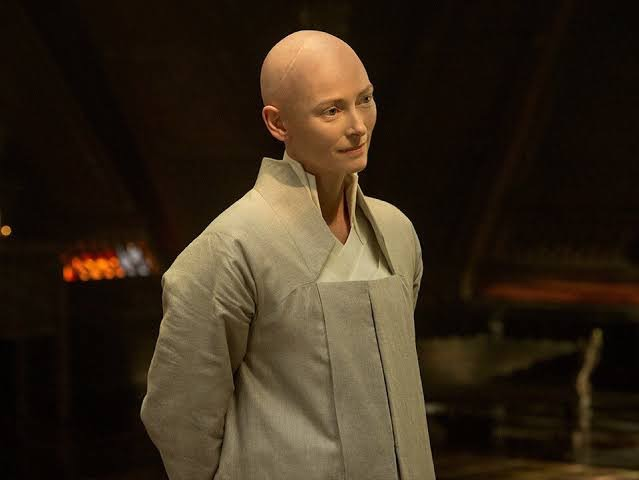
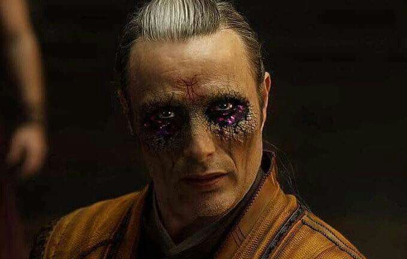

スティーブン・ストレンジ / ドクター・ストレンジ
傲慢な天才外科医 // サンクタムの守護者
神の手と称される傲慢な天才脳外科医だったが、交通事故で両手の神経を失い絶望する。奇跡を求め辿り着いたカマール・タージで魔術の修行に打ち込み、常識の枠を超える。インフィニティ・ストーンの一つ「タイム・ストーン」を内蔵する秘宝「アガモットの目」を使いこなし、最後の戦いではドルマムゥと「永遠の時間ループ」を築いて地球を救う。
「ドルマムゥ、取引をしに来た。……お前が勝つことはない、だが私は無限に負け続けることができる。これが我々の時間だ。」

エンシェント・ワン
至高の魔術師（ソーサラー・スプリーム） // 地球を護り続ける神秘
何世紀にもわたり地球を異次元の脅威から保護してきた至高の魔術師。ストレンジを厳しくも温かく導き、彼にマルチバースの真実と、自身の肉体を幽体離脱させる「アストラル体」の技法を教える。実は長生を維持するためダーク・ディメンションからエネルギーを密かに引き出しており、その矛盾が愛弟子たちを狂わせることになった。
「あなたが自分のすべてを支配できると思っているのは『幻想』です。……私の未来を遮る雪の結晶が見える。でも、あなたの未来は素晴らしい。」
ウォン
厳格な図書管理人 // 秘術の伝統を守る戦友
カマール・タージの膨大にして危険な魔導書を厳重に管理する生真面目な図書管理人。当初はストレンジの軽薄な態度を嫌い、笑顔すら見せなかったが、ストレンジの驚異的な学習能力と、カエシリウスの強襲から地球を守る戦いの中で強い信頼を築いていく。ストレンジが時間ループで取引を行っている間、最前線で命を懸けてサンクタムを死守する。
「禁書を読む者は、最後の数ページを絶対に読まない。……そこには警告が書いてあるからだ。お前は警告を無視したな、ストレンジ。」

カエシリウス / ゼロッツの長
絶望した元カマール・タージの徒 // 闇の召喚者
失った最愛の家族を取り戻したいという絶望からエンシェント・ワンに師事したが、彼女の語る「時を越える力」が嘘だと知り、激しく失望。時間は人間に死を強いる「病」であると定義し、時間を超越した「暗黒次元」の覇者ドルマムゥと契約を結ぶ。顔をドルマムゥの狂気のエネルギーに侵食され、異形の瞳となって地球を闇に引きずり込もうとする。
「時間は世界を引き裂く不当な力だ。……暗黒次元は時間を超越している。ドルマムゥこそが我々を死の恐怖から解放してくれる救世なのだ！」